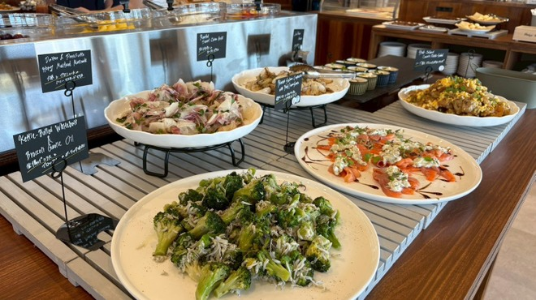

HOME / MENU
お昼は気ままなブッフェ。夜は、お好きな一品と。

切りたての生ハム、季節の野菜、冷菜や温菜。手作りのイタリアンと自社ベーカリーのパンをブッフェスタイルでお楽しみください。
サラダ、切りたての生ハム、冷菜、温菜、フライドポテト。季節や仕入れに合わせた料理が並びます。
自社ベーカリーのパン約5種を食べ放題で。お気に入りの料理と合わせてお楽しみください。
食事の締めくくりに、約4種のデザート。いろいろな味を少しずつどうぞ。
ホット・アイスコーヒー、ハーブティー、フルーツジュースなどのソフトドリンク付き。
写真は料理の一例です。内容は季節・仕入れによって変わります。最新の料金・ご利用条件は、ご予約時にご確認ください。
ディナーはアラカルトでご用意しています。パスタやお料理に、パンの食べ放題を合わせて。ワインやカクテルとともにお楽しみください。
金・土・日・祝日・祝前日・祝後日
お料理は単品でのご注文となります。お料理のブッフェはランチ限定です。
自社ベーカリーのパンの食べ放題をご用意。メニュー・料金・ご利用条件は店舗へお問い合わせください。